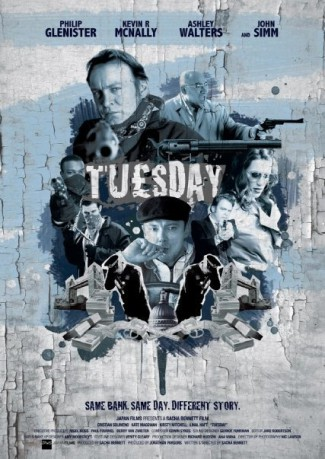
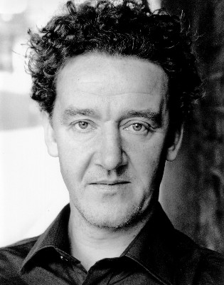
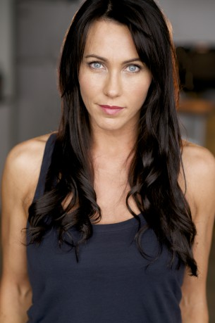
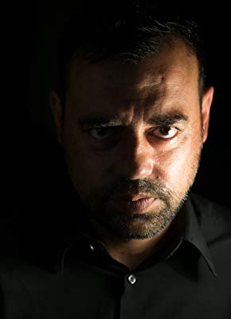

#10597 Tu£sday
Alternativ: Tuesday
 
 IMDB-Wertung: 5.2 / 10
IMDB-Wertung: 5.2 / 10  Metascore: 0
Metascore: 0 
What happens when 3 groups of people decide to rob the same bank on the same day?
Jahr: 2008
Dauer: 82 Minuten
FSK: 16
Land: England Studio: KNM Home EntertainmentTonspuren: DTS - ,
Untertitel: Deutsch,
Auflösung: 1080p (1920x776) Größe: 4608 MB
Genre: Action, Thriller, Krimi, Mystery
Regisseur: Sacha Bennett
Drehbuch: Sacha Bennett
Soundtrack: Edwin Sykes
Darsteller:
- Philip Glenister als The Cowboys - Earp
- John Simm als The Cowboys - Silver
- Ashley Walters als The Cowboys - Billy
- Cristian Solimeno als The Cowboys - Butch
 Kevin McNally als The Cops - Jerry
Kevin McNally als The Cops - Jerry- Dylan Brown als The Cops - Thomas
-  Gregor Truter als The Cops - Detective Laurel
- James Barriscale als The Cops - Detective Hardy
- Kate Magowan als The Bank - Angie
-  Kirsty Mitchell als The Bank - Samantha
- Alex Macqueen als The Bank - Mr. Jacobs
-  Emil Marwa als The Office - Raj
- Beth Goddard als The Office - Helen
- Marina Fiorato als The Gemhouse - Mrs. Jones
- Richard Brown als The Cops - P.C. Maguffin
- Sal Esen als The Bank - Mortgage Advisor
- Roger Layton als The Bank - George Hardy
- Veronica Brown als The Bank - Susan
- Michael Barber als The Bank - 'Curly'
- Lucy Burns als The Bank - 'Ginger Strauss'
- Linal Haft als The Office - William
- Jonathan Parsons als The Office - William's Boss
- David Garry als The Gemhouse - Mr. Wroe
- Catherine Locardi als The Gemhouse - Tina
- Andy Cody als The Gemhouse - The Bodyguard
- James Millman als The Gemhouse - The Gem Fence
- Paul Fournel als The Gemhouse - The Receptionist
- Nigel Bliss als The Gemhouse - The Jeweller
- Jim Alexander als Trojan Unit
- Brian Bosley als Trojan Unit
- Dell Taylor als Trojan Unit
Datei: X:\NEU\Tu£sday (2008, FSK16, 1920x776).mkv seit 29.01.2019
 Es gibt insgesamt 187 Filme in der Gruppe 'NEU'
Es gibt insgesamt 187 Filme in der Gruppe 'NEU'